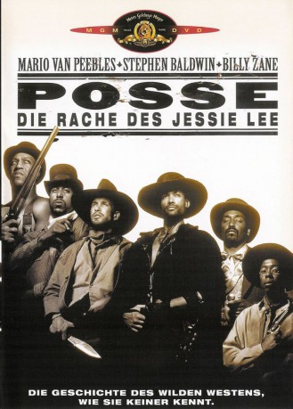
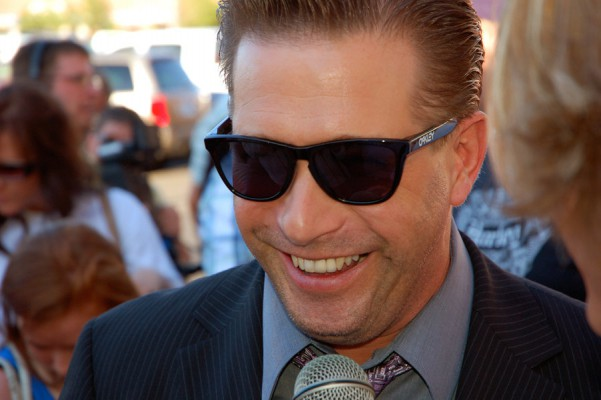
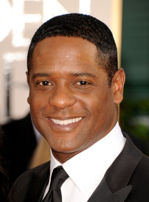
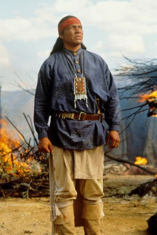

#1363 Posse - Die Rache des Jessie Lee
Alternativ: Posse
 
 IMDB-Wertung: 5.5 / 10
IMDB-Wertung: 5.5 / 10  Metascore: 0
Metascore: 0 
Im spanisch-amerikanischen Krieg von 1898 desertiert eine Handvoll schwarzer Söldner aus der US-Armee mitsamt einer Kiste Gold. Der ebenso sadistische wie raffgierige Colonel Gra-ham (Billy Zane) heftet sich an die Fersen der Gruppe, die von dem legendären Scharfschützen Jessie Lee (Mario van Peebles) angeführt wird. Lee wird nur von einem Gedanken beherrscht: Er will seinen Vater rächen, den weiße Siedler und ein korrupter Sheriff einst brutal ermordet haben.
Jahr: 1993
Dauer: 111 Minuten
FSK:
Land: England Studio: Concorde FilmverleihTonspuren:
Untertitel:
Auflösung: 720p (1280x544) Größe: 2406 MB
Genre: Western
Regisseur:  Mario Van Peebles
Mario Van Peebles
Drehbuch: Sy Richardson, Dario Scardapane
Soundtrack: Michel Colombier
Darsteller:
 Mario Van Peebles als Jesse Lee
Mario Van Peebles als Jesse Lee-  Stephen Baldwin als Jimmy J. 'Little J' Teeters
 Charles Lane als Weezie
Charles Lane als Weezie Tommy 'Tiny' Lister als Obobo
Tommy 'Tiny' Lister als Obobo- Big Daddy Kane als Father Time
 Billy Zane als Colonel Graham
Billy Zane als Colonel Graham-  Blair Underwood als Carver
- Melvin Van Peebles als Papa Joe
- Salli Richardson-Whitfield als Lana
 Tone Loc als Angel
Tone Loc als Angel Pam Grier als Phoebe
Pam Grier als Phoebe Isaac Hayes als Cable
Isaac Hayes als Cable Richard Jordan als Sheriff Bates
Richard Jordan als Sheriff Bates Paul Bartel als Mayor Bigwood
Paul Bartel als Mayor Bigwood- Stephen J. Cannell als Jimmy Love
 Richard Edson als Deputy Tom
Richard Edson als Deputy Tom- Nipsey Russell als Snopes
 Reginald VelJohnson als Preston
Reginald VelJohnson als Preston Woody Strode als Storyteller
Woody Strode als Storyteller- Reginald Hudlin als Reporter 31
- Warrington Hudlin als Reporter #2
- Aaron Neville als Railroad Singer
 Richard Gant als Doubletree
Richard Gant als Doubletree- Robert Hooks als King David
 Sandra Ellis Lafferty als Big Kate
Sandra Ellis Lafferty als Big Kate- Christopher Michael als Izzy
 Bob Minor als Alex
Bob Minor als Alex-  Steve Reevis als Two Bears
 Sy Richardson als Shepherd
Sy Richardson als Shepherd David Jean Thomas als Head Rower
David Jean Thomas als Head Rower- Karen Williams als Dilsey
- Sonny Skyhawk als (uncredited
- Vesta Williams als Vera
- James Bigwood als Walker
- Mark Buntzman als Deputy Buntzman
- Ismael Calderon als Spanish Soldier
- Tracy Lee Chavis als Susan
- James E. Christopher als Town Drunk
- Lawrence Cook als Cook
- Thomas Stephen Hall als Deputy Errol
- Jeffrey Lloyd Layne als Little Joseph
- Robert May als John, the Blacksmith
- T.J. McClain als Monty
- Dario Scardapane als Photographer
- Frank Soto als Aaron
- Mark Twogood als Wallace
- Geo Cook als Iron Brigade
- Mike Cook als Iron Brigade
- I. Keith Cunningham als Iron Brigade
- Andrew J. Gregory als Iron Brigade
Datei: X:\HD-Western-1980-1999\Posse - Die Rache des Jessie Lee (1993, FSK, 1280x544).mkv seit 26.06.2015
Festplatte: HD Eastern+Western
 Es gibt insgesamt 29 Filme in der Gruppe 'HD-Western-1980-1999'
Es gibt insgesamt 29 Filme in der Gruppe 'HD-Western-1980-1999'